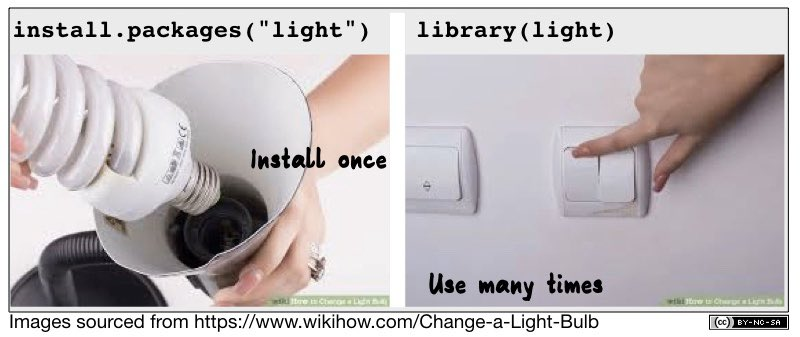

function(object_name1,
option1 = very_long_choice,
option2 = another_choice)2 Working with Datasets
(Late) Foreword on R and Command Structure
- Everything is an object.
- Everything has a name.
- Everything we do is based on functions.
- Functions come from “packages”1, but we will also write our own functions.
Points 1 and 2 are referred to as Object-Oriented Programming (OOP). In this course, we will learn object-oriented programming.
Sounds good, right?
Functions are (almost) always verbs followed by parentheses, e.g.,
colnames(), where the object to be processed is specified. This can be a variable or a dataset.Options may also be specified within the parentheses—for example, the command to read
.dtafiles isread_dta(datensatz.dta, n_max = 100).Line breaks are ignored by R, meaning we can write a command over multiple lines for better readability:
If we execute a function with
function(object_name, option1 = TRUE, option2 = FALSE), the result is displayed in the console.If the result of a calculation or operation is not only to be displayed but retained for further steps, it must be stored under
name <- .... The original object remains unchanged unless we explicitly overwrite it withname <- function(name). Here in the script, I often omit this step to see results directly, but to work with previous operations, we need to store them in R under an object name.Options within
()can also be specified based on the order.The help for a function can be accessed with
?function(), e.g.,?colnames().
Some general aspects where working with R differs from other programs:
R does not necessarily stop at a syntax error but tries to execute the remaining commands. However: RStudio stops with a syntax error from version 2022.07 onwards.For Stata users: no more
variable xyz already defined. We can overwrite anything without, replace, or similar commands.Due to object orientation, we can have multiple datasets open simultaneously, increasing flexibility.
In the first session, we did some steps with R’s calculator function. However, R’s real strength lies in data processing—so let’s get started.
2.1 Data Structures in R: data.frame
In the previous chapter, we combined the student numbers of the University of Bremen (19173), University of Vechta (5333), and University of Oldenburg (15643) under studs and related them to the professor numbers stored in profs. While this works fine, it is more organized to store related values together. For this, R provides the data.frame. We can store the two objects in a dataset by entering them into data.frame and storing the new object under dat1. When we call dat1, we see that the values have been combined row by row:
studs <- c(19173, 5333, 15643) # Store student numbers under "studs"
profs <- c(322, 67, 210) # Store professor numbers under "profs"
dat1_orig <- data.frame(studs, profs)
dat1_orig studs profs
1 19173 322
2 5333 67
3 15643 210dat1 <- data.frame(studs = c(19173, 5333, 15643),
profs = c(322, 67, 210),
gegr = c(1971, 1830, 1973)) # Without intermediate objects
dat1 # Display the entire dataset studs profs gegr
1 19173 322 1971
2 5333 67 1830
3 15643 210 1973In the first row, we see the values for the University of Bremen, in the second row for the University of Vechta, and so on. We can access the columns using dataset_name$variable_name. For example, we can display the profs column:
dat1$profs [1] 322 67 210We can display the variable/column names of the dataset with colnames()/names(). Additionally, we can call the number of rows and columns using nrow and ncol:
colnames(dat1) ## Display variable/column names[1] "studs" "profs" "gegr" names(dat1) ## Display variable/column names[1] "studs" "profs" "gegr" ncol(dat1) ## Number of columns/variables[1] 3nrow(dat1) ## Number of rows/cases[1] 3We can add new variables to the dataset by using dataset_name$new_variable:
dat1$stu_prof <- dat1$studs/dat1$profs
## dat1 now has one more column:
ncol(dat1) [1] 4dat1 studs profs gegr stu_prof
1 19173 322 1971 59.54348
2 5333 67 1830 79.59701
3 15643 210 1973 74.49048We can also store one or more words in a variable, but letters/words must always be enclosed in "".
dat1$uni <- c("Uni Bremen", "Uni Vechta", "Uni Oldenburg")
dat1 studs profs gegr stu_prof uni
1 19173 322 1971 59.54348 Uni Bremen
2 5333 67 1830 79.59701 Uni Vechta
3 15643 210 1973 74.49048 Uni OldenburgWith View(dat1), a new window opens where we can view the entire dataset:
View(dat1)
2.2 Data Types in R
So far, we have encountered two variable types: numeric (contains numbers) and character (contains text or numbers that are understood as text). We also learned an organization method: data.frame.
The following variable types in R are important for us:2
| Vectors (Variables) | |
|---|---|
| integer double |
Numeric values (numeric) |
| character | Text (or numbers understood as text) |
| factor | Text or numbers understood as text with predefined sorting and fixed value universe |
| logical | TRUE or FALSE—mostly the result of a comparison (greater/less/equal) |
| Combined Vectors | |
|---|---|
| data.frame tibble |
Two-dimensional data structure organized in tabular form—tibble is an enhancement of data.frame in the tidyverse (more on this later) |
| list | Ordered collection of vectors of different types—can contain other value types, data.frame, or even other lists |
For now, we focus on character and numeric variables. We will discuss the other types when they are needed. With class(), we can examine the type of a variable, or with is.numeric() or is.character(), we can check whether a variable belongs to a certain type:
class(dat1$profs)[1] "numeric"class(dat1$uni)[1] "character"We can enforce a type change with as.character() or as.numeric():
as.character(dat1$profs) ## The "" indicate that the variable is defined as character[1] "322" "67" "210"This does not change the original variable dat1$profs:
class(dat1$profs)[1] "numeric"If we want to keep this conversion for dat1$profs, we need to overwrite the variable:
dat1$profs <- as.character(dat1$profs)
class(dat1$profs)[1] "character"We cannot perform calculations with character variables, even if they contain numbers:
dat1$profs / 2 Error in dat1$profs/2: nicht-numerisches Argument für binären OperatorHowever, we can convert dat1$profs to numeric on the fly to perform calculations:
as.numeric(dat1$profs) / 2[1] 161.0 33.5 105.0If we convert text variables to numeric, calculations result in NA. NA in R stands for missing values:
as.numeric(dat1$uni)Warning: NAs durch Umwandlung erzeugt[1] NA NA NAR, understandably, does not know how to convert university names into numbers.
A common issue in calculations is due to incorrect variable types.
2.2.1 Exercise
2.3 Selecting Rows & Columns
A typical task when working with datasets is selecting rows (“cases”) and columns (“variables”).
For this, R in its base version3 provides a selection method using []. The basic structure is [row_selection, column_selection]. Leaving out the part before or after the comma selects all rows/columns. Be careful: forgetting the comma is a common source of errors in R.
dat1 # complete dataset
dat1[1,1] # first row, first column
dat1[1,] # first row, all columns
dat1[,1] # all rows, first column (equivalent to dat1$studs)
dat1[,"studs"] # all rows, column named studs -> note: ""In these square brackets, you can also write conditions to make selections from dat1.
dat1[dat1$studs > 10000, ] # rows where studs is greater than 10000, all columns
dat1[dat1$studs > 10000 & dat1$profs < 300, ] # & means AND
dat1$profs[dat1$studs > 10000] # Only see the number of professors: no commaRepetitive use of the dataset name in the [] makes the syntax quite long and somewhat tedious. Therefore, there is a better/more convenient solution. We use the {dplyr} package4.
2.4 Packages in R
Packages are extensions for R that include additional functions, some might be familiar with Stata’s ado files. Packages need to be installed once and then loaded before use in a new session (i.e., after every restart of R/RStudio). install.packages() performs the installation, and library() loads the packages:
install.packages("Package") # only needed once on your PC
library(Package) # needed after every restartOften, when using install.packages(), not only the specified package is downloaded but also a number of other packages, the so-called “dependencies”. These are packages used in the background to enable the functions of the desired package. So don’t be surprised if the installation takes a bit longer.
With install.packages() we essentially screw in the light bulb in R, with library() we flip the switch so we can use the functions from the package. Each restart turns the light bulb off again, and we need to turn it back on with library(). The advantage is that we don’t have to turn on all the light bulbs at once when starting R.

2.4.1 install.packages() on the IAB Servers
R Packages are typically installed from CRAN. However, this is not possible on the servers at IAB due to isolation from the internet. As a result, package installation is restricted on IAB servers to the collection maintained by DIM at N:/Ablagen/D01700-Allgemein/R/bin/windows/contrib/.
A central challenge in installing from local zip files is handling dependencies: packages that the desired package relies on. When installing from the internet, dependencies are automatically installed, but with a local installation, this is not the case.
At IAB, some workarounds exist, and currently, I have a solution in progress at FDZ based on a .Rprofile file that provides the fdz_install() command, which behaves like the standard install.packages() command (or should, at least).
The most recent version of the .Rprofile file can be found under N:\Ablagen\D01700-Quickablage\Filser\2025-06_Rprofile.R. Place the .Rprofile file in C:\Users\*YOUR_USERNAME*\Documents and restart R (CTRL + F10), you should then see a similar message in the console:
----------------------------------------
IAB-FDZ .Rprofile
Version 0.6
----------------------------------------
- Working directory: Z:/Eigene Dateien
- Default package library: Z:/R/4-4
- HOME directory: C:\Users\FilserA001.IAB\Documents
- R_home directory: C:/PROGRA~1/R/R-4.4.0
----------------------------------------To make matters more comfortable, you can run this code once to copy the .Rprofile from my Quickablage into your Documents folder on the server you’re working on:
file.copy(from = "N:/Ablagen/D01700-Quickablage/Filser/2025-06_Rprofile.R",
to = paste0(
dir(path = "C:/Users/",
pattern = Sys.getenv("USERNAME"), # find correct User-Folder on C:
full.names = T),
"/Documents/.Rprofile"
)
)
Loading packages once
In addition to library(), you can also call functions from packages using :::
package::function()This option is often used when only one function from a package is used or to clarify which package the function comes from. It can also help with issues if a command from another package has the same name—this will override the previous command (usually with a warning), which might look like:
The following objects are masked from ‘package:dplyr’:
between, first, last
The following object is masked from ‘package:purrr’:
transposeThis can be avoided by not fully loading certain packages but only calling the necessary functions with ::.
2.5 {tidyverse}
In this course, we will mainly work with packages from the {tidyverse}. The tidyverse is a collection of packages that share common syntax logic and thus harmonize particularly well and cover a broad range of use cases. With
install.packages("tidyverse")
fdz_install("tidyverse") # on IAB servers with .Rprofilethe following packages are installed:
broom, conflicted, cli, dbplyr, dplyr, dtplyr, forcats, ggplot2, googledrive, googlesheets4, haven, hms, httr, jsonlite, lubridate, magrittr, modelr, pillar, purrr, ragg, readr, readxl, reprex, rlang, rstudioapi, rvest, stringr, tibble, tidyr, xml2, tidyverse
We will get to know some of them during the course. The initially most important one is {dplyr}, which makes selecting cases and variables easier:
{dplyr} CheatsheetBut installation is only the first step; we need to load the package with library():
library(tidyverse) # after once using install.packages("tidyverse")2.5.1 Chaining Commands with %>%
In R, dplyr and other {tidyverse} packages use %>% (the pipe operator) to chain commands. This is a way to streamline commands and improve readability:
dat1 %>%
filter(studs > 10000) %>%
select(uni,studs) uni studs
1 Uni Bremen 19173
2 Uni Oldenburg 15643Here, %>% takes the output of one function and passes it as an input to the next function. This operator allows you to read and write code that closely resembles natural language. %>%[^pipe] simply stands for “and then”.
- Call
dat1and then (%>%) - Select only rows where
studs> 10000 and then (%>%) - Keep only the
unicolumn
dat1 %>% filter(.,studs > 10000) %>% select(.,uni) # the dot represents the result of the previous stepUsually it’s written just like this
dat1 %>% filter(studs > 10000) %>% select(uni) uni
1 Uni Bremen
2 Uni OldenburgThe shortcut for %>% is STRG+SHIFT+m (cmd+shift+m on Mac)
Let’s a have a closer look at filter() and select():
2.5.2 Selecting Observations with filter()
With filter(), we can select rows from dat1 based on conditions:
dat1 %>% filter(uni == "Uni Oldenburg", studs > 1000) studs profs gegr stu_prof uni
1 15643 210 1973 74.49048 Uni OldenburgThe selection does not change the original object dat1:
dat1 studs profs gegr stu_prof uni
1 19173 322 1971 59.54348 Uni Bremen
2 5333 67 1830 79.59701 Uni Vechta
3 15643 210 1973 74.49048 Uni OldenburgIf we want to keep the result of our selection with filter() for further steps, we can store it in a new data.frame object:
over_10k <- filter(dat1, studs > 10000)
over_10k studs profs gegr stu_prof uni
1 19173 322 1971 59.54348 Uni Bremen
2 15643 210 1973 74.49048 Uni Oldenburgfilter() helpers
{dplyr} provides a number of helpers for filter():
- greater/smaller than or equal to:
<=>= - or:
| - one of:
%in% - within a given range:
between()
filter(dat1, studs >= 10000)
filter(dat1, studs <= 10000)
filter(dat1,studs > 10000 | profs < 200) # more than 10.000 Students *or* less than 200 professors
filter(dat1, gegr %in% c(1971,1830)) # founded 1971 or 1830
filter(dat1, between(gegr,1971,1830)) # founded between 1971 and 1830 (including)2.5.3 Selecting variables with select()
select() allows us to select specific columns:
dat1 %>% select(uni,studs) # columns uni and studs uni studs
1 Uni Bremen 19173
2 Uni Vechta 5333
3 Uni Oldenburg 15643dat1 %>% select(1:3) # column 1-3 studs profs gegr
1 19173 322 1971
2 5333 67 1830
3 15643 210 1973dat1 %>% select(-profs) # all but profs studs gegr stu_prof uni
1 19173 1971 59.54348 Uni Bremen
2 5333 1830 79.59701 Uni Vechta
3 15643 1973 74.49048 Uni Oldenburgselect() helpers
contains("b"): Variable name contains...,matches(): Variable selection using regular expressions
dat1 %>% select(contains("s")) # all variables containing s
dat1 %>% select(matches("s$")) # all variables ending on s2.5.4 Selecting Rows with slice()
A first function from {tidyverse} is slice(), which allows us to select rows:
slice(dat1,1) # first row
slice(dat1,2:3) # rows 2-3
slice(dat1,c(1,3)) # rows 1 and 32.5.5 Sorting data with arrange()
Another common task in data analysis is sorting datasets. For this, we use arrange():
dat1 %>% arrange(studs) studs profs gegr stu_prof uni
1 5333 67 1830 79.59701 Uni Vechta
2 15643 210 1973 74.49048 Uni Oldenburg
3 19173 322 1971 59.54348 Uni BremenThis also works for string variables:
dat1 %>% arrange(uni) studs profs gegr stu_prof uni
1 19173 322 1971 59.54348 Uni Bremen
2 15643 210 1973 74.49048 Uni Oldenburg
3 5333 67 1830 79.59701 Uni VechtaOf course, we can also sort by multiple variables; we just add more to arrange() and we can sort in descending order using desc():
dat1 %>% arrange(desc(gegr), studs) studs profs gegr stu_prof uni
1 15643 210 1973 74.49048 Uni Oldenburg
2 19173 322 1971 59.54348 Uni Bremen
3 5333 67 1830 79.59701 Uni Vechta(This doesn’t make much sense in this example.)
2.6 Variable type factor
But what if we want to assign a specific order that doesn’t follow numeric or alphabetical order? For example, if we want to order the universities as follows: 1) Uni Oldenburg, 2) Uni Bremen, and 3) Uni Vechta.
This is where a third variable type comes in: factor.
With the levels = argument, we can define an order:
factor(dat1$uni, levels = c("Uni Oldenburg", "Uni Bremen", "Uni Vechta"))[1] Uni Bremen Uni Vechta Uni Oldenburg
Levels: Uni Oldenburg Uni Bremen Uni Vechtadat1$uni_fct <- factor(dat1$uni,
levels = c("Uni Oldenburg", "Uni Bremen", "Uni Vechta"))If we now sort by uni_fct, the order of the levels is respected:
class(dat1$uni_fct)[1] "factor"dat1 %>% arrange(uni_fct) studs profs gegr stu_prof uni uni_fct
1 15643 210 1973 74.49048 Uni Oldenburg Uni Oldenburg
2 19173 322 1971 59.54348 Uni Bremen Uni Bremen
3 5333 67 1830 79.59701 Uni Vechta Uni VechtaThis may seem trivial at the moment but is very useful later for ordering variables in plots or setting the reference category in regression models.
We can use the levels = and labels = for a lazy recode:
dat1$gegr_fct <- factor(dat1$gegr,
levels = c(1830,1971,1973) ,
labels = c("early","70s","70s")) # labels do not need to be unique
dat1 studs profs gegr stu_prof uni uni_fct gegr_fct
1 19173 322 1971 59.54348 Uni Bremen Uni Bremen 70s
2 5333 67 1830 79.59701 Uni Vechta Uni Vechta early
3 15643 210 1973 74.49048 Uni Oldenburg Uni Oldenburg 70sdat1 %>% arrange(desc(gegr_fct)) studs profs gegr stu_prof uni uni_fct gegr_fct
1 19173 322 1971 59.54348 Uni Bremen Uni Bremen 70s
2 15643 210 1973 74.49048 Uni Oldenburg Uni Oldenburg 70s
3 5333 67 1830 79.59701 Uni Vechta Uni Vechta earlydat1 %>% arrange(desc(gegr_fct),gegr) studs profs gegr stu_prof uni uni_fct gegr_fct
1 19173 322 1971 59.54348 Uni Bremen Uni Bremen 70s
2 15643 210 1973 74.49048 Uni Oldenburg Uni Oldenburg 70s
3 5333 67 1830 79.59701 Uni Vechta Uni Vechta early2.6.1 Exercise
2.7 Setting up a project
In general, it’s worth setting up projects in RStudio. Projects are .Rproj files  that automatically set the working directory to where they are saved. This simplifies collaborative work: no matter who is working on a project or on which device, the project file ensures all paths are always relative to the project directory. Furthermore, version control via git, e.g., github, and other functions can be set in the project file for all users. Also, the last open scripts remain open, making it easier to work on multiple projects.
that automatically set the working directory to where they are saved. This simplifies collaborative work: no matter who is working on a project or on which device, the project file ensures all paths are always relative to the project directory. Furthermore, version control via git, e.g., github, and other functions can be set in the project file for all users. Also, the last open scripts remain open, making it easier to work on multiple projects.

With getwd(), we can check if it worked:
getwd()[1] "D:/Courses/R-Course"
Alternatively, we could create an .Rproj project with the following command (here’s an example of calling a package with ::):
rstudioapi::initializeProject(path = "D:/Courses/R-Course")We can open the project with:
rstudioapi::openProject(path = "D:/Courses/R-Course")R-Projects are a great way to maintain your projects and also can help to ensure reproducibility in conjunction with the FDZ .Rprofile:
By default, the .Rprofile stores all packages installed via fdz_install() in your personal Documents folder on Z:, as you can see in the startup message in the path displayed as Default package library:
- Default package library: Z:/R/4-4This has the disadvantage that you might overwrite packages when working on different projects. In the worst case, you’re break code from older projects when updating to a newer version of a package. You’ll have to track down the original package version when you’re trying to re-run code from the older project. ⚠️ This can be extremely painful and make you question what life decisions brought you here. ⚠️
Therefore, I recommend setting up a **project-specific* RProfile for projects that require reprodicibility: 1️⃣ copy the .Rprofile to your project-root-directory 2️⃣ amend the first few lines so that packages are loaded and installed from within the project folder by changing lines 11-19
2.8 Importing datasets
In most cases, we’ll use datasets that are already saved in a file and just need to be imported. There are countless ways to do this.
In this seminar, we’ll work with the Campus-File of PASS, whose parts are available as Stata files.
To import the dataset into R, we need to tell R the file path where the dataset is located. The file path depends on your device’s folder structure; in this case, it would be “D:/Courses/R-Course/”.
Of course, the file path depends on where you saved the dataset:

We need to inform R of this file path.
2.8.1 The import command
Now we can use the actual import command read.table. For the path, we can just enter the quotation marks after file = and press the Tab key. Then we’ll see all subdirectories and tables in the project folder.5
library(haven)
pend <- read_dta("./orig/PENDDAT_cf_W13.dta") The import process consists of two parts: first, we specify the object name as pend, under which R will store the dataset. After the <- is the actual read_dta() command, which contains several options. First, we specify the exact dataset name, including the file extension.
R has problems with Windows-style
\ in file paths
Unfortunately, Windows systems use \ in file paths, which causes problems in R. Therefore, file paths must always be specified with / or alternatively with \\. RStudio can help a bit with the CTRL + F/Search & Replace function.
The object created is a data.frame:
class(pend)[1] "tbl_df" "tbl" "data.frame"Technically, it’s a tibble—an enhanced version of data.frame in the tidyverse that includes labels and provides additional information in its display, such as variable classes in the first row.
If we were to simply type pend here, the entire dataset would be displayed. For an overview, we can use head:
head(pend)# A tibble: 6 × 123
pnr hnr welle pintjahr pintmon pintmod zpsex palter PD0400
<dbl> <dbl> <dbl+l> <dbl+lb> <dbl+l> <dbl+lb> <dbl+l> <dbl+> <dbl+lbl>
1 1000001901 10000019 1 [Wav… 2007 5 [May] 1 [CAP… 2 [Fem… 36 2 [Rat…
2 1000001902 10000019 1 [Wav… 2007 5 [May] NA 1 [Mal… 39 2 [Rat…
3 1000001901 10000019 3 [Wav… 2009 3 [Mar… 1 [CAP… 2 [Fem… 38 -9 [Ite…
4 1000002001 10000020 1 [Wav… 2007 4 [Apr… 1 [CAP… 1 [Mal… 66 -10 [Ite…
5 1000002002 10000020 1 [Wav… 2007 4 [Apr… 1 [CAP… 2 [Fem… 61 3 [Rat…
6 1000002002 10000020 2 [Wav… 2008 5 [May] 1 [CAP… 2 [Fem… 62 3 [Rat…
# ℹ 114 more variables: PA0100 <dbl+lbl>, PA0200 <dbl+lbl>, PA0300 <dbl+lbl>,
# PA0445 <dbl+lbl>, PA0800 <dbl+lbl>, PA0900 <dbl+lbl>, PA1000 <dbl+lbl>,
# PSM0100 <dbl+lbl>, PEO0100a <dbl+lbl>, PEO0100b <dbl+lbl>,
# PEO0100c <dbl+lbl>, PEO0100d <dbl+lbl>, PEO0100e <dbl+lbl>,
# PEO0200a <dbl+lbl>, PEO0200b <dbl+lbl>, PEO0200c <dbl+lbl>,
# PEO0200d <dbl+lbl>, PEO0300a <dbl+lbl>, PEO0300b <dbl+lbl>,
# PEO0300c <dbl+lbl>, PEO0300d <dbl+lbl>, PEO0300e <dbl+lbl>, …With nrow and ncol, we can check if it worked. The dataset should have 28424 rows and 123 columns:
nrow(pend)[1] 28424ncol(pend)[1] 123Of course, we can also select rows and columns from this much larger dataset as we did before. For example, we can select the data from 2006 and store it under pend06:
pend06 <- pend %>% filter(pintjahr == 2006)Naturally, pend06 has significantly fewer rows than pend:
nrow(pend06)[1] 168If we want to see the exact ages of the respondents from pend06, we can call up the corresponding column with pend06$palter:
pend06$palter<labelled<double>[168]>: Age (W1: gen. from P1; W2 ff.: best info.), gen.
[1] 71 66 64 64 63 51 64 65 26 38 41 63 58 58 69 45 59 37 28 63 56 29 29 49 47
[26] 66 34 22 21 37 36 58 56 80 44 65 61 66 40 53 34 70 69 54 65 62 58 54 51 57
[51] 72 52 25 34 55 44 68 73 46 87 74 83 46 40 62 58 66 41 53 71 66 79 54 42 68
[76] 68 81 92 70 66 68 77 44 66 66 67 62 43 35 35 52 54 20 48 48 20 41 24 22 33
[101] 55 41 50 36 19 52 25 36 37 29 37 36 43 49 16 59 28 19 43 44 30 43 50 50 53
[126] 52 71 43 58 58 58 38 49 30 27 50 58 26 36 44 28 19 42 44 23 20 33 24 31 32
[151] 31 44 50 58 45 57 37 62 46 52 50 47 40 62 40 19 28 35
Labels:
value label
-10 Item not surveyed in questionnaire version
-9 Item not surveyed in wave
-8 Implausible value
-4 Question mistakenly not asked
-3 Not applicable (filter)
-2 Details refused
-1 Don't knowAs we’ve seen, there are many more variables in PASS than just palter, and not all have such meaningful names—like PD0400. To understand these variable names and the meaning of the values, we need the codebook.
We can also access a variable’s attributes()—more on labels later.
2.8.2 Exercise
2.9 Exporting objects
The term save can sometimes lead to misunderstandings in R: does it mean
saving a dataset or other object to disk as .csv, .dta, .sav for access by other programs, or
simply storing the results internally in R under an object name?
I avoid the word save and instead speak of exporting (Case 1: writing to a file) or storing (Case 2: storing results/values within R in an object).
The proprietary format in R for exporting data.frames and reloading afterwards is .RData (comparable to dta in Stata):
saveRDS(pend06, file = "./data/pend06.RData")
rm(pend06) # delete pend06 from memory
pend06_neu <- readRDS(file = "./data/pend06.RData")
head(pend06) # does not exist anymore -> rm()Error: Objekt 'pend06' nicht gefundenhead(pend06_neu,n=1)# A tibble: 1 × 123
pnr hnr welle pintjahr pintmon pintmod zpsex palter PD0400
<dbl> <dbl> <dbl+l> <dbl+lb> <dbl+lb> <dbl+l> <dbl+l> <dbl+> <dbl+lbl>
1 1000402601 10004026 1 [Wav… 2006 12 [Dec… 0 [CAT… 1 [Mal… 71 -10 [Ite…
# ℹ 114 more variables: PA0100 <dbl+lbl>, PA0200 <dbl+lbl>, PA0300 <dbl+lbl>,
# PA0445 <dbl+lbl>, PA0800 <dbl+lbl>, PA0900 <dbl+lbl>, PA1000 <dbl+lbl>,
# PSM0100 <dbl+lbl>, PEO0100a <dbl+lbl>, PEO0100b <dbl+lbl>,
# PEO0100c <dbl+lbl>, PEO0100d <dbl+lbl>, PEO0100e <dbl+lbl>,
# PEO0200a <dbl+lbl>, PEO0200b <dbl+lbl>, PEO0200c <dbl+lbl>,
# PEO0200d <dbl+lbl>, PEO0300a <dbl+lbl>, PEO0300b <dbl+lbl>,
# PEO0300c <dbl+lbl>, PEO0300d <dbl+lbl>, PEO0300e <dbl+lbl>, …We can also export and restore other objects. However, we need to load() them, which will result in restoring the previous object name:
save(studs, file = "./data/stud_vektor.RData")
rm(studs)
studs
load(file = "./data/stud_vektor.RData") # studs is back with the same object name
studsThis also works for multiple Objects:
save(studs,profs, file = "./data/meine_vektoren.RData")
rm(studs,profs)
studs
profs
load(file = "./data/meine_vektoren.RData") # studs & profs restored with the same name
studs
profs2.9.1 Exercise
2.10 Overview: Importing and exporting data sets
| file type | R function | R package | Comment |
|---|---|---|---|
| .csv | read.table() | - | set delimiter with `sep = ";"` |
| .Rdata (R format) | readRDS | - | |
| große .csv | vroom() | {vroom} | set delimiter using `delim = ";"` |
| .dta (Stata) | read_dta() | {haven} | |
| .dta (Stata - große Dateien) | read.dta13() | {readstata13} | use convert.factors = F to import only numeric values also imports files from newer Stata versions |
| .dat (SPSS) | read_spss() | {haven} | |
| .xlsx (Excel) | read_xlsx() | {readxl} | use `sheet = 1`to specifiy which sheet you want |
# csv file
dat1 <- read.table(file = "Dateiname.csv",sep = ";")
# Rdata
dat1 <- readRDS(file = "Dateiname.Rdata")
# large csv
library(vroom)
dat1 <- vroom(file = "Dateiname.csv",delim = ";")
# Stata dta
library(haven)
dat1 <- read_dta(file = "Dateiname.dta")
# Stata large files
# faster than read_dta(), but without labels
library(readstata13)
dat1 <- read.dta13(file = "Dateiname.dta",convert.factors = F)
# SPSS sav
dat1 <- read_sav(file = "Dateiname.sav")
# Excel
dat1 <- read_xlsx(path = "Dateiname.xlsx", sheet = "1")
dat1 <- read_xlsx(path = "Dateiname.xlsx", sheet = "Tabellenblatt1")| file type | R function | R package | Comment |
|---|---|---|---|
| .Rdata (R format) | saveRDS() | - | all variable properties remain |
| .csv | write.table() | - | use `sep = ";"` to set delimiter br>use row.names= F to suppress row numbering |
| .dta (Stata) | write_dta() | {haven} | |
| .dat (SPSS) | write_spss() | {haven} | |
| .xlsx (Excel) | write.xlsx() | {xlsx} | use `sheetName` to select excel sheet |
# Rdata
saveRDS(dat1,file = "Dateiname.Rdata")
# csv
write.table(dat1,file = "Dateiname.csv",sep = ";",row.names = F)
# dta
library(haven)
write_dta(dat1,path = "Dateiname.dta")
# sav
library(haven)
write_sav(dat1,path = "Dateiname.sav")
# xlsx
library(xlsx)
write.xlsx(dat1,file = "Dateiname.xlsx", sheetName = "Tabellenblatt 1")2.11 Getting help
R packages (often) come with very detailed help pages, which can either be called up directly from RStudio:
# help for packages
vignette("dplyr")
vignette(package = "dplyr")
vignette("rowwise")
help("dplyr")
help(package = "dplyr")
# help for a specific function
?select()Alternatively, googling the package and function mostly gives you what you need R dplyr select()
Or refer to the CRAN site:

2.12 Exercises
2.12.1 Exercise 1
- Create a
data.frameobject calleddat2:
dat2 <- data.frame(studs = c(14954,47269 ,23659,9415 ,38079),
profs = c(250,553,438 ,150,636),
prom_recht = c(FALSE,TRUE,TRUE,TRUE,FALSE),
gegr = c(1971,1870,1457,1818,1995))- Do you see
dat2in your environment? - Print
dat2in the console. - Add the names of the universities as a new column to the dataset. The names are in this order:
c("FH Aachen","RWTH Aachen","Uni Freiburg","Uni Bonn","FH Bonn-Rhein-Sieg")[1] "FH Aachen" "RWTH Aachen" "Uni Freiburg"
[4] "Uni Bonn" "FH Bonn-Rhein-Sieg"- Display
dat2- either in the console or usingView(). - Calculate the ratio of students per professor and store the results in a new variable. Check the result.
- Display only the third row of
dat2. - Display only the third column of
dat2.
What would you do to copy dat2 into an object called df_unis?
2.12.2 Exercise 2
- Create a
.Rprofilefor the package installation inC:\Users\*USERNAME*\Documents. - Install the tidyverse packages using
fdz_install("tidyverse")after placing the.Rprofilefile underC:\Users\*USERNAME*\Documents. - Use the
data.framedat2from Exercise 1. - Use
filterto display only the universities with fewer than 10,000 students. (Remember to install and load{tidyverse}withlibrary()). - Display the founding years (
gegr) column of universities with the right to award doctorates (prom_recht).
2.12.3 Exercise 3
- Continue using the dataset from Exercises 1 & 2 (dat2)
- Display only the universities that were founded in 1971, 1457, or 1995, and for these cases, show only the name and founding year.
- Sort the dataset according to the following order. (Create a
factorvariable that defines this order.)
c("RWTH Aachen", "Uni Freiburg", "Uni Bonn", "FH Aachen", "FH Bonn-Rhein-Sieg")[1] "RWTH Aachen" "Uni Freiburg" "Uni Bonn"
[4] "FH Aachen" "FH Bonn-Rhein-Sieg"2.12.4 Exercise 4
- Create an R project in your directory for this course.
- Save the personal data from the PASS-CampusFile (
PENDDAT_cf_W13.dta) in your directory in the subfolder orig. - Read the dataset
PENDDAT_cf_W13.dtaas shown above into R and assign it to the object namepend. - Use
head()andView()to get an overview of the dataset. - How many entries (rows) does the dataset contain?
- Display the variable names of
pendusingnames()! - How old is the respondent with the
pnr1000908201 inwelle10 (inpintjahr2016)? - Display the wave (
welle) and age (palter) of respondent with thepnr1000908201? - Store the resulting data.frame in an object, e.g.
resp_1000908201.
2.12.5 Exercise 5
- Export the
data.frameresp_1000908201created in the previous exercise as an.Rdatafile. - Load the exported
.Rdatafile under a different name, e.g.,resp_1000908201_new. - Did everything work? Compare the newly loaded object with the original one:
identical(resp_1000908201, resp_1000908201_new)- are both objects identical?
2.13 Appendix
2.13.1 Alternatives to R Projects
Besides setting up a project, you can also set the path using setwd() or directly specify it within read_dta() or other read...() commands. However, this approach is less portable to other machines. When someone else opens the .Rproj file, R automatically sets paths relative to the file’s location. This is also true if the directory is moved on your device—R will automatically adjust the working directory.
To set the working directory with setwd(), insert the folder path within the parentheses. Make sure to replace any \ with /:
setwd("D:/Kurse/R_IAB")You can check if it worked with getwd():
getwd()The path you set with setwd() should appear.
Alternatively, you can provide the full path directly in read_dta():
pend <- haven::read_dta("C:/Kurse/R_IAB/orig/PENDDAT_cf_W13.dta")2.13.2 Selecting Rows & Columns Without {dplyr}
Base R (without extensions like {dplyr}) can also filter datasets using square brackets []:
dat1[1, 1] # first row, first column[1] 19173dat1[1, ] # first row, all columns studs profs gegr stu_prof uni uni_fct gegr_fct
1 19173 322 1971 59.54348 Uni Bremen Uni Bremen 70sdat1[, 1] # all rows, first column (equivalent to dat1$studs)[1] 19173 5333 15643dat1[, "studs"] # all rows, column named studs -> note the ""[1] 19173 5333 15643You can also select multiple rows or columns by using c():
dat1[c(1, 2), ] ## 1st & 2nd row, all columns
dat1[, c(1, 3)] ## all rows, 1st & 3rd column (equivalent to dat1$studs & dat1$stu_prof)
dat1[, c("studs", "uni")] ## all rows, columns named studs and uniYou can also write conditions in these square brackets to make selections from dat1.
dat1 # full dataset studs profs gegr stu_prof uni uni_fct gegr_fct
1 19173 322 1971 59.54348 Uni Bremen Uni Bremen 70s
2 5333 67 1830 79.59701 Uni Vechta Uni Vechta early
3 15643 210 1973 74.49048 Uni Oldenburg Uni Oldenburg 70sdat1[dat1$uni == "Uni Oldenburg", ] # Rows where uni equals "Uni Oldenburg", all columns studs profs gegr stu_prof uni uni_fct gegr_fct
3 15643 210 1973 74.49048 Uni Oldenburg Uni Oldenburg 70sdat1$studs[dat1$uni == "Uni Oldenburg"] # Just check the student count: no comma needed[1] 15643This works as expected, and we can expand it:
dat1[dat1$uni == "Uni Oldenburg" & dat1$studs > 10000, ] # & means AND studs profs gegr stu_prof uni uni_fct gegr_fct
3 15643 210 1973 74.49048 Uni Oldenburg Uni Oldenburg 70sYou can also use the OR operator:
dat1[dat1$uni == "Uni Oldenburg" | dat1$studs > 10000, ] studs profs gegr stu_prof uni uni_fct gegr_fct
1 19173 322 1971 59.54348 Uni Bremen Uni Bremen 70s
3 15643 210 1973 74.49048 Uni Oldenburg Uni Oldenburg 70s2.13.3 select() vs $
When you use select() to pick a specific variable, it preserves the data structure as a data.frame(), whereas dat1$variablename extracts the column as a vector (a series of values):
dat1$studs[1] 19173 5333 15643class(dat1$studs)[1] "numeric"dat1$studs / 20[1] 958.65 266.65 782.15select() keeps the values as a column in a data.frame:
dat1 %>% select(studs) studs
1 19173
2 5333
3 15643dat1 %>% select(studs) %>% class()[1] "data.frame"dat1 %>% select(studs) / 20 studs
1 958.65
2 266.65
3 782.15In many other programming languages, these are called libraries.↩︎
There are more, and this enumeration ignores technical details—for an advanced introduction to vectors in R, click here.↩︎
We will see soon how packages can make working in R easier.↩︎
It has become common in the R community to write packages with
{}to distinguish them more clearly from functions. I follow this convention in this script.↩︎Sometimes the dataset is not in the project’s subfolder, in which case the entire path can be specified in
read_dta():pend <- read_dta(file = "D:/Courses/R-Course/data/PENDDAT_cf_W13.dta")↩︎